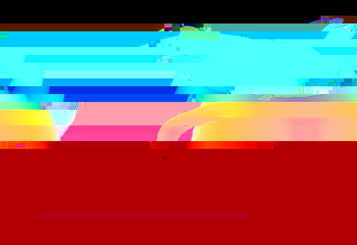

A macro that generates a special image from the current viewer suitable for 3D stereo display using ChromaDepth glasses.
Input Ports
Name Type Description view_in GDview Connection to the viewer output port. Parameters
Name Type Description UI Control mix float Amount of luminance to mix into output. Slider Output Ports
Name Type Description chromadepth_image Image_ARGB Chromadepth image output as an AVS image field. chromadepth_obj DataObject Directly renderable output object.
The ChromaDepth project provides low level tools and a high level macro for generating special 3D images. The images are designed to be viewed using glasses manufactured by Chromatek Inc. The 3D depth in the scene is encoded into the image by using colour information. The colour of each pixel in the image is shifted in the colour spectrum proportionally to the distance it is away from the camera. Hence near points appear red or orange, far points appear cyan or blue and the mid-ground appears green. When wearing the special glasses each eye views the generated scene using a special lens material that achieves an angular shift of image position which is color dependent. This creates the illusion of depth within the image. More information on the technique can be found on Chromatek's primer web-page. An example of an image created using this technique is shown below:
 The chroma_depth macro can be used to create still images, movies or interactive applications within AVS/Express. The implementation accesses both the image and the Z-buffer of the current viewer, combining the information into one new composite ARGB image. The project contains one simple C++ low-level module to perform the conversion. The system maps Z depth to a range of colors as specified in the ChromaDepth guidelines. The image buffer is converted into a black and white luminance image and mixed with the Z derived colors to provide better 3D object shading and shape definition. As well as being a useful macro in itself the chroma_depth macro provides a very good example of how the framebuffer and the Z-buffer of the current view can be accessed from within AVS/Express.
The special 3D glasses needed to view these scenes are available from:
CHROMATEK INC.
ALPHARETTA, GEORGIA
http://www.chromatek.comChromaDepth, 3-D and C3D are trademarks of Chromatek Inc., and protected by patents.
The only user macro provided with this project is the chroma_depth user macro. This macro performs takes the output of a UViewer3D view output port and converts it into to a ChromaDepth style image. The output of this macro can be connected to a 2D viewer for display. This user macro is an extension of the OutputField module and hence contains the same controls as that module. Please see the AVS/Express documentation for an explanation of the function of the OutputField module and of its parameters.
view_in
The current view exposed as an output port from the 3D viewer is connected so the module has access to the framebuffer and the Z-buffer.
mix
This floating point parameter specifies how much of the original luminance data should be mixed in with the generated ChromaDepth image. Luminance data normally comes from the lighting and shading that is performed by Express. A value of 1 indicates that all the luminance data should be used. Conversely a value of 0 indicates that none of the luminance data should be used. The user should modify this parameter until the best effect is achieved.
chromadepth_image
Output image (ARGB, uniform structured 2D field) suitable for either further image processing or exporting to an image file using the write_image module. The output image is of Image_ARGB type. Therefore it is a 2D uniform field containing a single set of node data. That node data contains 4 bytes of information per node.
chromadepth_obj
Directly renderable output image that can be displayed in a 2D viewer.
The low-level ChromaDepthCore module takes simple arrays of data as its framebuffer and Z-buffer inputs and outputs a byte array. This module is used by the chroma_depth_buffer functional macro. This macro takes an buffer structure as its input and outputs an image field and a DataObject. Finally the chroma_depth user macro uses this functional macro. It takes a View object as its input and also includes the standard OutputField user interface. Normally it will only be necessary to use the chroma_depth user macro.
xp_comm_proj/chromad/chr_mods.v contains the V definition of the ChromaDepthCore module.
xp_comm_proj/chromad/chr_macs.v contains the V definitions of the chroma_depth_buffer functional macro and the chroma_depth user macro.
xp_comm_proj/chromad/chr_apps.v contains the V definition of the ChromaDepthEg example application.
An example applications is provided with this project. The ChromaDepthEg application demonstrates the use of the standard and ChromaDepth viewers. The first viewer is a 3D interactive window showing the teapot. This can be zoomed, rotated and translated as normal. The second window shows the output of the ChromaDepth module in a 2D image window. If you are wearing Chromatek 3D glasses, this image will appear as a 3D object.
The low-level ChromaDepthMods library containing the low-level module ChromaDepthCore does not specify a process. By default the express process will be used.
Ian Curington, AVS Inc.
Andrew Dodd, International AVS Centre